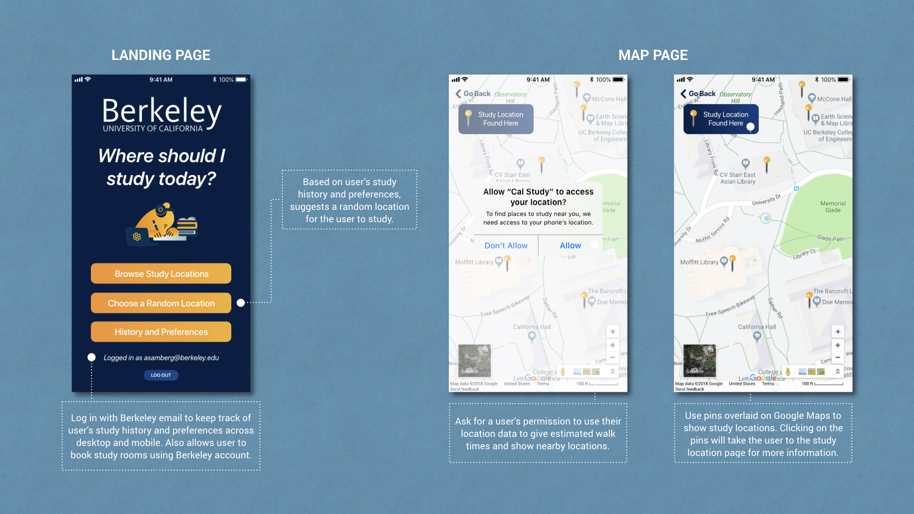
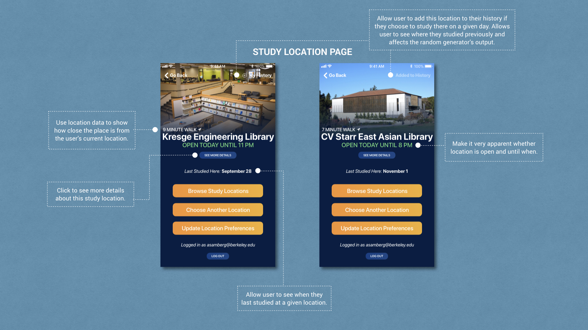
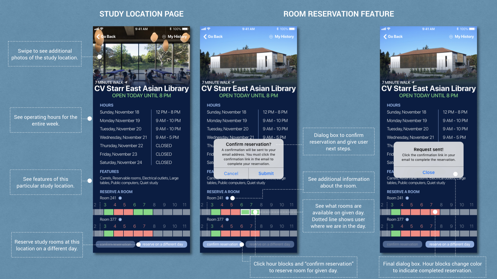
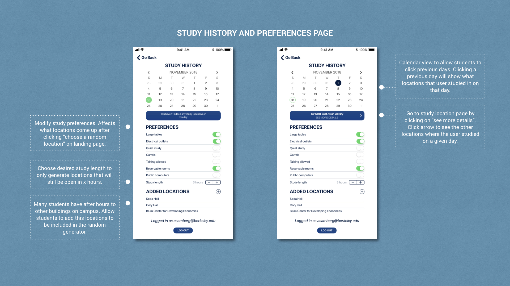
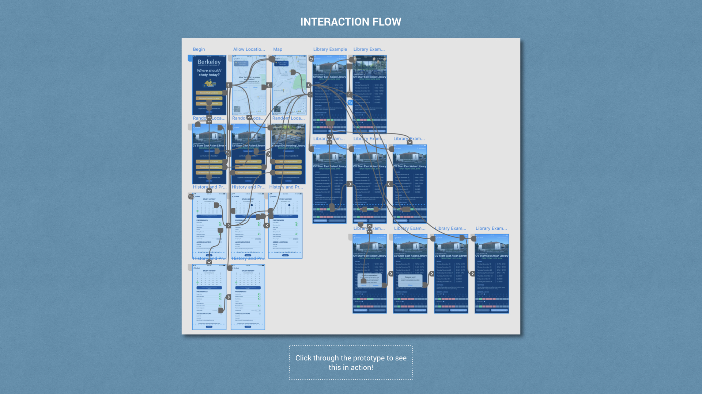

Disclaimer: This application is not affiliated with the University
of California, Berkeley in any way.
Click here to go straight to the prototype. I noticed that when
my friends and I went out to study we often found ourselves always heading to the same places to study or taking a really
long time to decide where we should go out to study because we had gotten tired of our go-to study location. Studies have shown
that when a student changes where they study regularly, their grades and memory improve (links to
NYTimes article ,
academic study ,
academic study ).
I created a prototype in Adobe XD for an application that would solve this
problem. This application allows users to search their surrounding areas for study locations,
book study rooms, generate a random study location based on preferences/needs, and keep track of study location history.
Scroll down to see more of the features explained, to interact with a prototype, and to see a video walkthrough
of the application.





Below you can find an interactive prototype of the app and below that, you can find a video of me
clicking through and trying all the features of the application.
Click to interact with this prototype! Note: May take some time to load.

{kind=link}